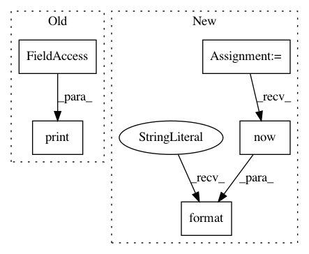

053d0c2ba48ac6d2ba9cd89676784b893fd9234b,donkey/remotes.py,RemoteClient,decide,#RemoteClient#Any#Any#Any#Any#,37
Before Change
"started your server and you"re referencing the right port.")
time.sleep(3)
print(r.text)
data = json.loads(r.text)
angle = float(data["angle"])
After Change
end = time.time()
lag = end-start
self.log("{}, {} \n".format(datetime.now().time() , lag ))
print("vehicle <> server: request lag: %s" %lag)
data = json.loads(r.text)
In pattern: SUPERPATTERN
Frequency: 3
Non-data size: 5
Instances
Project Name: autorope/donkeycar
Commit Name: 053d0c2ba48ac6d2ba9cd89676784b893fd9234b
Time: 2017-02-28
Author: wroscoe@gmail.com
File Name: donkey/remotes.py
Class Name: RemoteClient
Method Name: decide
Project Name: autorope/donkeycar
Commit Name: 7daff13b85e869614dd3abe9e5a208de4ea69807
Time: 2017-02-23
Author: wroscoe@gmail.com
File Name: donkey/remotes.py
Class Name: RemoteClient
Method Name: decide
Project Name: stratosphereips/StratosphereLinuxIPS
Commit Name: 3725c2181c1a08071673295c076384880748fd3d
Time: 2019-01-17
Author: eldraco@gmail.com
File Name: logsProcess.py
Class Name: LogsProcess
Method Name: process_global_data